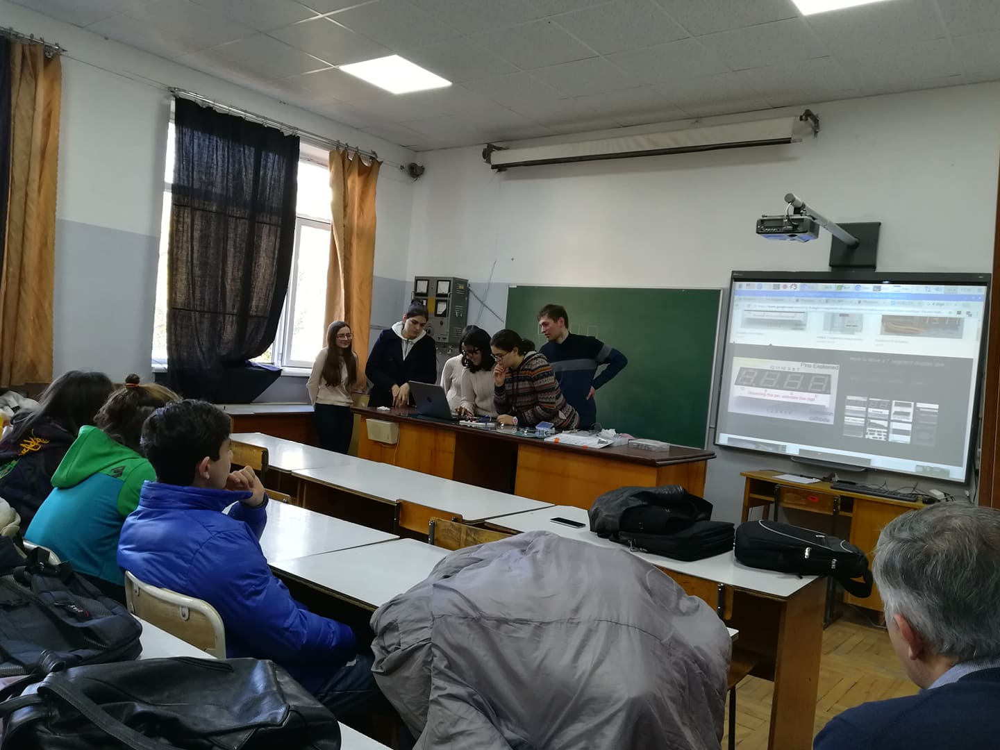
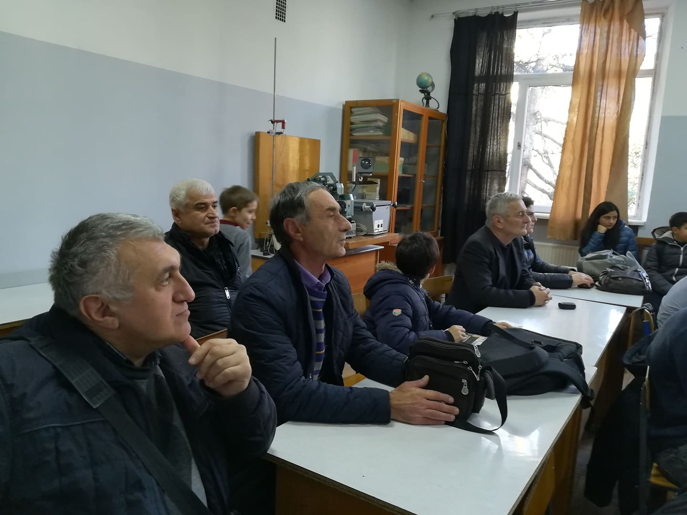
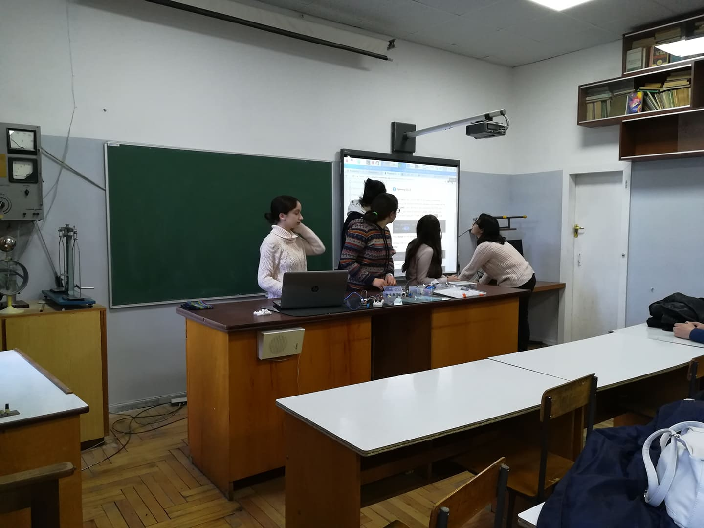
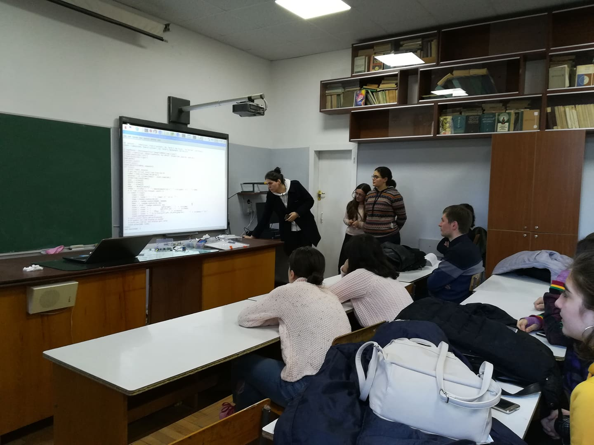
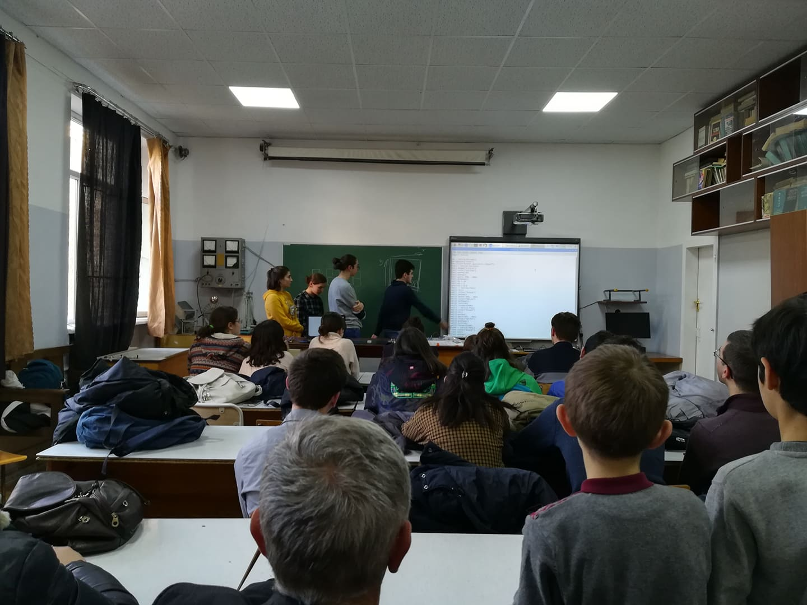

13 დეკემბერს კომაროვის სკოლის მეათე და მეთერმეტე კლასელებმა დაასრულეს რუსთაველის ფონდის ფიზიკის პროექტის პირველი ეტაპი და წარადგინეს პრეზენტაცია. პროექტის საბოლოო მიზანია რადიაციის გამზომი სადგურის შექმნა კომაროვში. პირველ ეტაპზე მოსწავლეებმა შეისწავლეს პროგრამირების ენა Python-ი და წარმოადგინეს სხვადასხვა ამოცანების პრეზენტაციები, რომლებიც გვიჩვენებდა იმის მოდელირებას, თუ რას გააკეთებდნენ მომავალში, როდესაც რადიაციას შეისწავლიდნენ. მაგალითად, ააწყვეს წრედი და დაწერეს პროგრამა რომლის საშუალებითაც ოთახში ზომავდნენ ტემპერატურასა და ტენიანობას. პრეზენტაციას დაესწრნენ რუსთაველის ფონდის წარმომადგენლები, კომაროვის სკოლის ფიზიკის მასწავლებლები და ბავშვები, რომლებიც დაინტერესებულნი იყვნენ ამ პროექტით. მას შემდეგ, რაც პროექტი დასრულდება და კომაროვში შეიქმნება რადიაციის გამზომი სადგური, რუკაზე, რომელზეც მთელი მსოფლიოს მაშტაბით სხვადასხვა სკოლებია დატანილი რადიაციის გამზომი სადგურის სახით, კომაროვის სკოლაც დაემატება. პროექტის ხელმძღვანელია კომაროვის ფიზიკის მასწავლებელი, ქალბატონი ინდირა ნატრიაშვილი, და მოწვეული მეცნიერ-კონსულტანტი, ბატონი რევაზ შანიძე.
    დეკემბერი, 2018
გამოცემა N1
ავტორი: მარიამ ჩხეიძე